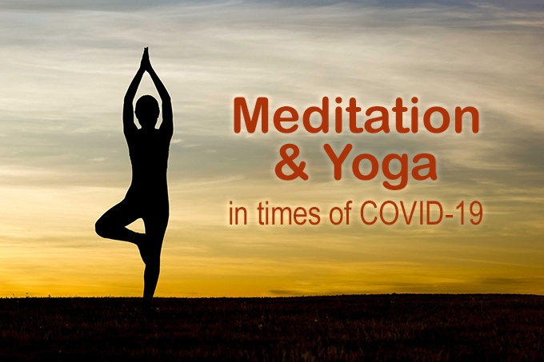

Yoga’s incorporation of meditation and breathing can help improve a person’s mental well-being. “Regular yoga practice creates mental clarity and calmness; increases body awareness; relieves chronic stress patterns; relaxes the mind; centers attention; and sharpens concentration,” says Dr. Nevins. Body- and self-awareness are particularly beneficial, she adds, “because they can help with early detection of physical problems and allow for early preventive action.”
To begin meditating, find a place where you can sit comfortably and quietly. Then close your eyes and do nothing for a minute or so. Thoughts may come during that time, and that is okay. Then start the audio below and play your mantra** at a whisper. Each time you hear your mantra, say it quietly inside without moving your tongue or lips. After one minute the audio will fade to silence. Then continue saying your mantra quietly inside for four more minutes. If thoughts come during that time, gently return to saying your mantra quietly inside. The audio will tell you when four minutes is over
